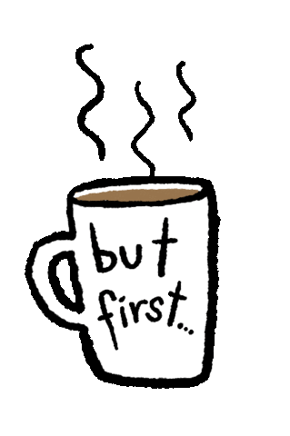

Olá, visitante! Sou um desenvolvedor front-end apaixonado por tecnologia e jogos. Em 2020, encontrei minha paixão no desenvolvimento front-end ao criar sites com WordPress. Fiquei encantado com as possibilidades que essa ferramenta oferece, permitindo-me explorar minha criatividade e impulsionar os negócios dos meus clientes.
Atualmente, estou focado no desenvolvimento de software utilizando ReactJS e TypeScript, enquanto também estudo Node.js e Python para expandir minhas habilidades no desenvolvimento back-end. A seguir, você encontrará mais detalhes sobre minha experiência e habilidades.
Habilidades e Experiência:Experiência no desenvolvimento front-end com ênfase em ReactJS e TypeScript. Criação de interfaces interativas, escaláveis e de alto desempenho. Desenvolvimento de sites institucionais, e-commerces e landing pages utilizando WordPress. Utilização de testes unitários para garantir a qualidade do código. Estudo em andamento de Node.js e Python para aprimoramento no desenvolvimento back-end.
